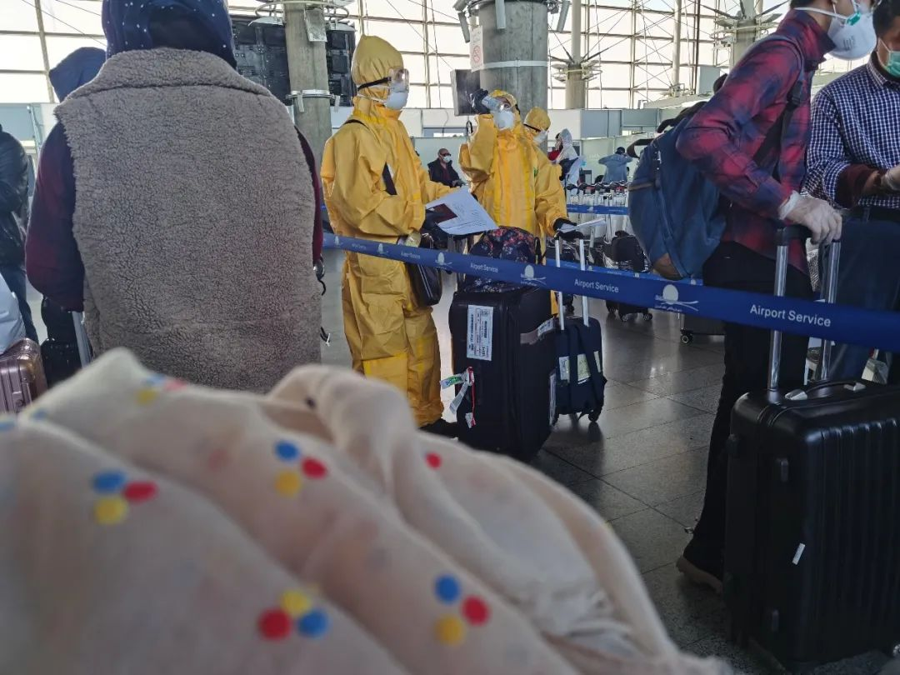
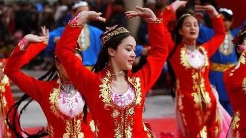
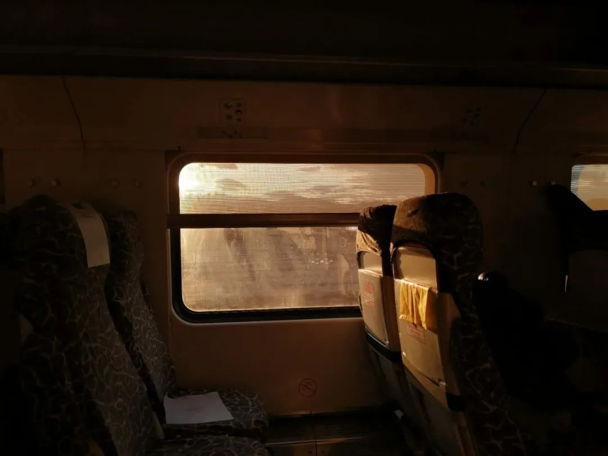

隔离在伊朗的日子｜正午
原文链接 备份链接 隔离在伊朗的日子 口述 | 孙建龙 采访、文 | 杨溪 1 当地时间3月5日上午十点半，我的一位伊朗朋友在德黑兰南部汽车站等待巴士，准备前往另一座城市伊斯法罕。 人比以往少了许多。他看到一支车队浩浩荡荡赶到汽车站，皮卡 …
这几天伊朗首都德黑兰通往外地的高速公路极其拥堵，很多民众依然坚持出行，伊朗人的心态可见一斑。
记 者 | 应 琛
受访者 | 小 禹、方玉儿
四川姑娘方玉儿，3月9日下午终于踏上了回国的旅程。
机场人非常少，大屏幕显示当天总共只有三个航班，除了她所乘坐的飞往郑州的航班外，还有一趟飞杭州的，以及飞往另一个国家的。
“大使馆能安排包机送我们回国已经很心满意足了，一切听从安排。”方玉儿说，当天在机场，她看到只有少数工作人员穿着隔离服，很多工作人员甚至连口罩都没有戴，“在登机口，伊朗地勤提供了餐食，建议我们先吃完，上了飞机全程不要摘下口罩”。
坐上摆渡车到停机坪，中国的工作人员让所有人每五六个人一组下车，测量体温和消毒之后才可以进入机舱。
方玉儿感谢祖国接她回家 视频｜快手“方玉儿在伊朗” 经授权发布
“除了每个人都隔开坐之外，航空公司还特意隔开了几排，让一些有咳嗽症状但没有发烧的人坐在最后面。”方玉儿说，“从接到有包机可以回国的那一刻就开心得不得了，坐上飞机，更是觉得无比安心。”

在郑州机场停机坪等待大巴转运至隔离点 方玉儿供图
目前，方玉儿正在郑州接受统一隔离。生活条件等各方面，她都很满意。利用隔离期，她终于有时间整理这段日子以来积累的视频素材，“我准备剪辑一下发布”。
在宾馆接受集中隔离 视频｜快手“方玉儿在伊朗” 经授权发布
“我还不知道回到四川后要不要再进行隔离，我咨询了几个地方，给我的回答都不太一样。但不管怎样，如果要隔离，我肯定全力配合，毕竟祖国已经接我回来，不能再添麻烦。”方玉儿说。
背包客的全球旅行，在伊朗中止
1月29日，背包旅行的方玉儿完成了上一站的行程，从巴基斯坦走陆路入境伊朗，“海关和酒店除了问得比较细之外，倒是没有太大的阻力，因为他们看我行程知道我在巴基斯坦已经待了20多天”。
但普通民众却没了想象中的友好。方玉儿告诉《新民周刊》，她在街上遇到过有人骑着摩托车朝她大喊“中国病毒”，也遇到过被吐口水的情况，被一些餐馆、酒店、商店拒绝进入更是常事。但也有陌生路人为自己国家有歧视行为而向她道歉，有好心的旅店老板在她行程受阻时，想方设法给予帮助。
在方玉儿看来，面对疫情伊朗人挺乐观的，他们中有人开玩笑说新冠肺炎病毒好像特别喜欢新年。
乐观的另一面是对疫情防控不重视。“伊朗人戴口罩的只有十分之一吧。”方玉儿说。

伊朗街头戴口罩的人寥寥无几 方玉儿供图
2月20日，方玉儿从伊朗第二大城市马什哈德去了亚兹德。她的旅行计划原本最终目的地是非洲，她一开始打算找个居住成本比较低、人又相对较少的地方先住着，等国内疫情过去后，再继续旅行。
没想到伊朗疫情突然暴发。2月22日，方玉儿接到在伊朗阿巴斯港的朋友的电话，让她赶紧想办法离开伊朗，“朋友说，伊朗疫情挺严重的，而且有迅速增长的势头，他们当时已经买了去土耳其的机票”。
除了土耳其外，方玉儿还计划过从迪拜、泰国、俄罗斯等第三国曲线回国的方案，但不是遇到航班被取消，就是需要过境签，而当地已经暂停为中国人办理过境签的情况。
“老实说，也怪我自己一开始有些侥幸心理，觉得伊朗疫情不会很严重，不想那么轻易放弃行程。后来又比较拖，迟迟没有想好怎么走，错过了离开的时机，我有朋友早些时候还是可以从第三国转机回国的。”方玉儿说，因为对疫情的害怕，她一直不敢回德黑兰，因为那里人口密度还是比较高的，又离疫情最严重的库姆不远。
2月27日一早，方玉儿连夜坐了火车回到德黑兰。当天就看到中国驻伊朗大使馆官微推送的信息，让在伊中国人不要轻易选择从第三国回国的方式，“因为每个国家的入境政策每天都在变，也是不想造成我们的损失”。
但没过两天，大使馆发布消息，让在伊中国人登记个人信息，并组建了微信群。“群里工作人员又发了表格让我们再登记一遍个人信息，并说可以拉认识的中国人进群。”方玉儿说，那个时候她就猜测可能是会有包机回国。

在德黑兰机场办理登机 方玉儿供图
果不其然，3月3日，第一批包机将滞留在库姆的留学生接回中国。方玉儿坦言，在青旅等待包机的过程还是很焦虑的，她和住在这里的中国人轮流出去买菜，起初是四个人，后来又来了一些等包机的中国人，这些人说，德黑兰接待中国人的旅店并不多了。
伊朗新年遭遇疫情，还是有人走亲访友
3月20日，伊朗迎来了波斯历新年——诺鲁孜节。往年此时，伊朗各地大街小巷人头攒动。但今年的新年对伊朗人显然不同寻常。
截至北京时间3月20日22时，伊朗累计确诊病例19644人，累计死亡1433例。

往年的诺鲁孜节 资料图
按照习俗，伊朗人喜欢在新年走亲访友，或者全家外出旅游，很多人等了一年就为了全家一起去宗教圣城马什哈德朝觐许愿。
伊朗政府和国家电视台一连数天呼吁并告诫民众，新年出行探亲访友可能会把死亡和疾病带回家。同时，因为伊朗小城市及乡镇医疗资源有限，太多民众出行很有可能会导致医疗资源紧缺。但这几天伊朗首都德黑兰通往外地的高速公路极其拥堵，很多民众依然坚持出行，伊朗人的心态可见一斑。
“因为这次疫情，政府取消了所有大型活动，包括新年相关的庆祝活动，当地的巴扎（集市）、清真寺都关了，大多数伊朗人确实也无心过年，但我出门去办签证那天，街上行人和车辆仍然不少，相信很多人还是会去走亲访友的。”身处伊朗亚兹德的中国人小禹在接受《新民周刊》采访时表示。
亚兹德街头大部分商店已停止营业，但因为新年的到来，仍有部分商店在营业 视频由小禹提供
因为生意上的原因，小禹是大半年前到伊朗的，当时住在伊朗第三大城市伊斯法罕的朋友家。除了考察当地的藏红花生意之外，小禹还会利用空余时间深入小城镇用镜头记录当地的风土人情。他还会在“快手”上直播，或上传一些短视频。但伊朗新冠肺炎疫情暴发后，他也没有心思搞直播了。

疫情前，小禹（右一）和伊朗朋友在公园的自拍 小禹供图
当地时间2月19日，伊朗卫生部宣布，伊朗境内出现两例新型冠状病毒肺炎确诊病例，两名患者均来自什叶派圣城库姆。随后，伊朗卫生部发言人贾汉普尔发文证实，因年龄和免疫能力等原因，两名患者已死亡。据报道，两人均为伊朗本国公民，此前既没有在海外旅行，也没有离开过库姆省。

2月20日，在伊朗首都德黑兰，行人走过印有议会选举候选人的海报 图｜新华社 摄｜艾哈迈德·哈拉比萨斯
“当伊朗出现确诊病例时，当地的中国人还是很警觉的，每天都会看新闻了解相关信息，也尽量不出门。但伊朗人感觉就没有这个意识，原来怎么样就还是怎么样，起初也没有人戴口罩。”看到伊朗人对疫情不重视，小禹坦言自己还是比较慌的，想尽快离开。他先是前往德黑兰，一是去续签了伊朗签证，二是办理土耳其签证，看看有没有机会从德黑兰飞去土耳其。

伊朗疫情暴发时空空如也的火车 小禹供图
但当小禹拿到土耳其签证时，新闻宣布伊朗和土耳其间的航班都被取消了。
“差不多时间，德黑兰当地政府下令关闭一些酒店，我住的酒店也不接待新入住的中国人了。”
鉴于这种情况，3月初，小禹坐火车前往亚兹德，“一方面，我有朋友在那里开民宿，那边生活成本也比德黑兰低一些；另一方面，亚兹德算是伊朗的一个古城，人口不多，以本地人为主，没什么游客，人口流动也相对较少”。
出发前，小禹在德黑兰买到两个一次性口罩，“差不多人民币四五元一个，后面就买不到了”。由于口罩的稀缺，他的第一个口罩戴了差不多近半个月，“舍不得换新的，直到在亚兹德朋友给了我一些口罩后，我才换了新口罩”。
小禹告诉记者，他现在非必要就不出门。除了超市、药店等这些必要的商店正常营业之外，很多店铺都已经关门了，而他住的民宿也不对外营业了。
比较棘手的是，小禹的签证3月23日即将到期，“我看群里，有说法是目前的情况签证会自动续签三个月，也有说法是很多人被拒签了”。
3月18日，亚兹德旅游局一行人来到该民宿慰问华人。当得知小禹的情况后，旅游局局长写了一张纸条给签证中心，希望能尽量帮助解决小禹的签证问题。

亚兹德旅游局慰问当地华人 小禹供图
3月19日，小禹和朋友带着纸条前往签证中心，看看能否办理成功。无奈，遇上波斯新年，签证中心已经放假。

亚兹德街头车流攒动，有少部分人戴着口罩 小禹供图
选择留守当地，估计疫情要持续到4月
“等他们上班了，我再去问问。”小禹说，之前他非常迫切想回国，但因为种种原因错过了中国驻伊朗大使馆的包机，“反正我已经在大使馆那里登记过了，如果还有包机再说。尤其是看到大批海外华人这个时候回国，给国内疫情防控增加了不小的压力，我的想法改变了，心态也积极了许多，我觉得只要在这里不出门，自我隔离，做好防护就可以了”。
据伊通社报道，伊朗卫生部发言人贾汗普尔表示，现在伊朗疫情非常严峻，医疗物资也很缺乏，一些民众不予合作，导致伊朗平均每小时就有50人感染病毒。他呼吁民众要遵守卫生部的建议，尽量避免外出。
伊朗卫生部副部长阿里雷扎·雷西18日再次发出严重警告称，如果每个人都能遵守相关指示，自我居家隔离两周，或者根据规章制度按需外出，那将对遏制疫情有很大帮助，“这两周（伊朗新年假期）是绝佳机会。如果没抓住这个机会，那么接下来的两个月或许更长时间，我们将不得不继续同新冠病毒作斗争，造成更多损失”。
伊朗官员透露，卫生部预计确诊病例将在未来数周持续增长，峰值或出现在4月8日。对于医务人员提议的封城措施，伊朗最高国家安全委员会已经表示了拒绝。

2 月 23 日，伊朗首都德黑兰一家药店内，销售人员大多没有戴口罩 图｜新华社
前些天小禹还与伊斯法罕的伊朗朋友联系，朋友和家人已经自觉自我隔离了，但还有很多伊朗人仍然没有这个意识，照样不作任何防护措施就出门。小禹坦言，他对伊朗的疫情不是很乐观，“感觉要到4月底才会达到峰值。总之，再继续观望看看”。


新民周刊所有平台稿件， 未经正式授权
一律不得转载、出版、改编或进行
与新民周刊版权相关的其他行为，违者必究


原文链接 备份链接 隔离在伊朗的日子 口述 | 孙建龙 采访、文 | 杨溪 1 当地时间3月5日上午十点半，我的一位伊朗朋友在德黑兰南部汽车站等待巴士，准备前往另一座城市伊斯法罕。 人比以往少了许多。他看到一支车队浩浩荡荡赶到汽车站，皮卡 …
原文链接 备份链接 编者按 本文是作者自2月21日至3月1日在伊朗首都德黑兰写下的生活日记。 对比其他国家，伊朗异常紧张的国际处境、多年制裁下脆弱的经济和深入到社会生活方方面面的宗教传统，都影响着它面对疫情的态度。从2月20日晚间伊朗首次 …
原文链接 备份链接 新冠疫情让处于美国制裁中的伊朗经济雪上加霜，也给本已激化的社会对立火上浇油，对于伊朗政权而言，眼下可能是伊斯兰革命40年来最危险的时刻 *************************李斯洋 | …
原文链接 备份链接 根据伊朗卫生部消息，截至3月18日中午，伊朗累计确诊新冠肺炎病例17361例，其中5710例康复，1135例死亡。无论确诊还是死亡人数，都位居世界第三，仅次于中国和意大利。 伊朗也是目前已知最多政府官员确诊的国家，包括 …
原文链接 备份链接 伊朗卫生部7日公布，截至当地时间7日上午，伊朗新增新冠肺炎确诊病例1076例，累计病例数升至5823例，其中死亡145例，治愈1669例。 地处欧亚大陆“十字路口”的伊朗，向外扩散的风险日渐增加。 实习记者｜ 戴敏洁 …